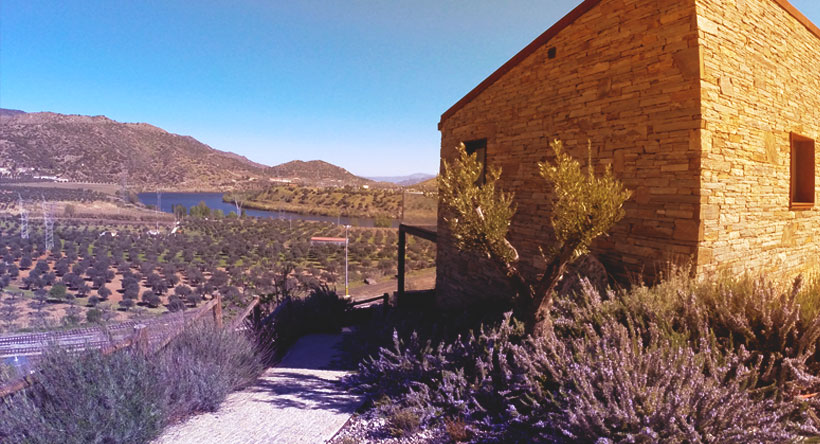

The harmony between Douro and Côa
Located on the slopes of Douro, with its own vineyards and next to the train station of Pocinho, this guest house is set in two regions classified as World Heritage by UNESCO: Alto Douro Vineyard and Cave Engravings of Coa Valley.




Results
The aim of this project was achieved by the sophistication and sobriety implemented on the webdesign developed. With a prime location, the visual impact (through the use of photos and graphic compositions) was the key to grew the reputation and consequent the demand.